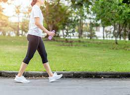

Author 1: SSEMBATYA DAVID
Author 2: KYAGABA JONAH
Author 3: MUWANGUZI CYRUS, MUKISA SAMUEL, OTHIENO ERNEST BENDICT.
COSIS
MAakerere University
StayFit Limited
5th Street Kawempe
Kampala, Uganda
Vortex is an application that hepls us manage and keep track of our body weight. The app was developed to enable users know their body weight and hepls to reduse obesity and over weight through the different exercises provided by expert gymnastists
Why Vortex?
According to statistics, 13% of the adults in the world re obese. 39% of the adults in the world are over weight and one-in-five children and adoloscents globally are overweight. This is what Vortex is here to solve.
Obesity Stastics
What Do We Have in Vortex
Weihgt manager has a variety of exersises mainly designed to deal with excess colories in the body. This helps to keep good shape of the body and protect our selves from cardiovascular diseases. Workouts vary according to the user's goal. The user may choose the workouts according to the goals that he or she may want to accomplish.
- Shedding fat
- Improving endurance
- The user may also choose the specific period of time to accomplish the goal.
- The application tracks and counts the number of step that are made by the user.
Here are some of the exercises that the user can do;
- Running and Jogging @Difference between Running and Jogging.
- Walking.
- Push-ups
- Staying strong
How Vortex Gets You Going
After the user chooses the goal, the appication determines the the appropriate exercises. body weight and the height of the user.
The Application the calculates the body mass index(BMI). The BMI is the ratio of the height to the square of the body mass.
The application then recommends the best exercises based on the advice of the scientists.
Download For Free
The Application can be downloaded for free from Google play and App Store for Android and Apple devices respectively.Enter your email address and mobile number below;
Jogging And Running
Though most of the people confuse jogging and Running, there is actually a clear difference between the two. The difference is actually in the pace between the two with running having the higher pace.
Running
Jogging
Just like stated before, the main difference between jogging and running is the difference in the pace and Vortex just helps you do that;
Walking
 This is the exercise in the Vortex with lowest intesity and its for mainly people with cardiovascular problems and those who are too obese. Just like any exersise, start with low intesuty nd incresse when you feel that your heart has endured the previous workload. You might start with five minutes and then increase the walking duration by 5 minutes every week until youy reach atleast 30 minutes. all in all its about determination increasing the work when you feel ready to do so.Then you can adjust to more intense exercises. Studies have shown that working out at 7 A.M. can help you alter your body clock for the better. You'll be more vigorous in the morning and fall asleep earlier in the evening, making sure you get the right amount of rest each night. Specialists though advise that anu person working out must have easy and hard days. An easy day is when your workload is lower and the hard day is when the user's workload is slightly higher. However walking with a bottle of water is not a bad habbit since it enable you keep your boby hydrated. One can mix glucose in the water.
Working On The Abs
Studies Show that a healthy body should have less than 1.0 for men or 0.85 for women. A good indicator of having a high level of visceral fat, is a high BMI score (Body Mass Index) and a large waist. If you have both, chances are likely that you have a high level of visceral fat.
Abs Exercises

Some of the Abs Exercises in the App require tools and other just use our body weight. The exercises the include: the Hard- Style plank, The head bug, Dumbell side bend, Cruches and the Plunk.
Percentage time that user are recommended to sepend on the Different workouts
| Workout type | Beginners | Intermidiate | Pro(Athelete) |
|---|---|---|---|
| Walking | 40.0% | 10.0% | Optional |
| Running | 20.0% | 40.0% | 42.1% |
| Abs | 10.0% | 20.5% | 30.0% |
| Legs | 30.0% | 29.5% | 27.9% |
| Total | 100% | 100% | 100% |
Remember this is just advised by the professionals and the user can spend the percentage time on each workout just
as he/she feels is best for him/her or depending on the part that he/she wants to work on.
According to scientist, walking and running are the most basic exersises that can help to fight obesity
and over-weight.
We are going to take you through the best tips to have successfull running and walking exercises.
One study, conducted by researchers at The University of Sydney
published in The British Journal of Sports Medicine,
found that the faster a person walks on average, the lower their risk of
both all-cause mortality and death linked to heart disease
Walking is a form of low impact, moderate intensity exercise that
has a range of health benefits and few risks. As a result,
the CDC recommend that most adults aim for 10,000 steps per day . For most people,
this is the equivalent of about 8 kilometers, or 5 miles.
Running is an incredibly effectivefat burning exercise. In fact, when it comes to losing weight,
it's difficult to beat. According to data from
the American Council on Exercise, a runner who weighs 180 pounds burns
170 calories when running for 10 minutes at a steady pace.
However running every day is bad for your health because it increases your risk of overuse injuries like stress fractures,
shin splints, and muscle tears. You should run three to five days
a week to make sure you're giving your body adequate time to rest and repair
If you're just starting a new running routine and were previously inactive,
you can see improvements in your cardiorespiratory
fitness within four to six weeks. If you've been running for a while and
you're trying to get faster, it may be a few months before you see any noticeable gains.
Be proud of your body,feel confident.
You may not be there yet, but you are clser than you were yesterday and remember that Good things come to those whe sweat.
The Application consists of the top exercises that are desined to meet the user's
fitness requirements. The exercises range from walking, running, push-ups, Abs,leg workouts and Plunks.
All users sre recommendd to be consistent for better results. Remember, PERCISTANCE IN EVERYTHING YIELDS SUCCESS.
DON'T DREAM IT, WORK IT OUT!
Calisthenics
BodyBuilding
Yoga
Credits: God's Grace: Almighty God / God's Mercy: Christ The King
How to Workout with The App
Before workout
Ensure that you are well hydrated and that you have enough glucose levels before you ypu start the exercise.
Put on soft and light runners and optionally a jumper to enable the body warm up easily.
To help increase calorie burn, a person should walk uphill regularly. For some,
this may mean increasing the treadmill gradient, while others may want to incorporate more hills into their outdoor walking routine.
A person should aim to walk up hills, stairs, or inclines two to three times a week
During workout
Walking 1 hour each day can help you burn calories and, in turn, lose weight. In one study,
11 moderate-weight women lost an average of 17 pounds (7.7 kg),
or 10% of their initial body weight, after 6 months of brisk daily walking
Feel the Expereince

All Exercises in The Collection
Additional Exercises that may not be included
This is a form of strength workout that exercises large muscle groups, such as standing, grasping, pushing and others.

This is the use of progressive resistance exercise to control and dvelop one by muscle hypertrophy for aesthetic purposes.
Yoga as exercise is a physical actuvity consistingmainly of postures, often connected
by flowing sequences, sometimes accomplished by breathing exercises.